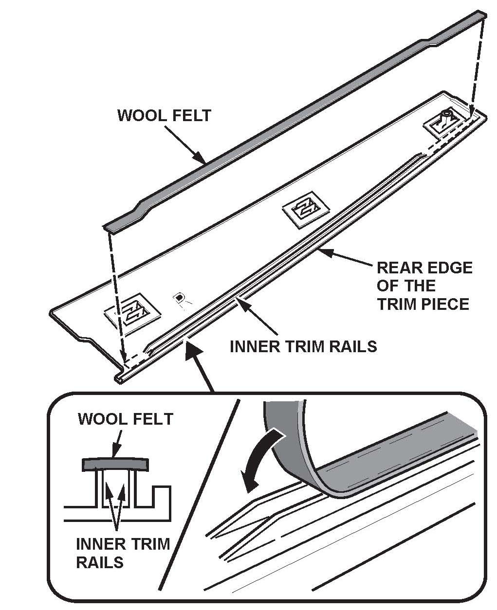

Body - Front Door Sash Trim Creaks/Moves
12-006February 24, 2012
Applies To:
2007-12 MDX - ALL
Front Door Sash Trim Creaks and Moves
SYMPTOM
The front door sash outer trim creaks and moves on the door sash pillar.
PROBABLE CAUSE
The door's sash outer trim fit is loose.
CORRECTIVE ACTION
Apply wool felt beneath the front door sash outer trim.
PARTS INFORMATION
Wool felt, 0.5 mm - P/N 06993-SA5-000 (One box of wool felt will repair many vehicles.)
WARRANTY CLAIM INFORMATION
The normal warranty applies.
Operation Number: 8270A1
Flat Rate Time: 0.2 hour
Failed Part: P/N 72470-STX-A01ZA
Defect Code: 06201
Symptom Code: 04201
Skill Level: Repair Technician
REPAIR PROCEDURE
1. Fully lower the front window.
2. Carefully pull back the door weatherstrip, and remove the screw.
3. Remove the door sash outer trim by pulling the trim piece up to release the hooks.
NOTE:
Take care not to scratch the door or damage the door glass outer weatherstrip.
4. Cut a wool felt strip 5 mm wide by 450 mm long.

5. Peel the adhesive protector off the felt strip. Apply it over the inner trim rails on the sash outer trim piece. Before pressing the felt into place, make sure it is centered, so that the felt equally covers the trim rails from side to side and top to bottom.
6. Reinstall the sash outer trim. Make sure the glass run channel is securely installed in the door sash.
7. Repeat steps 1-6 on the other side, if needed.

Disclaimer